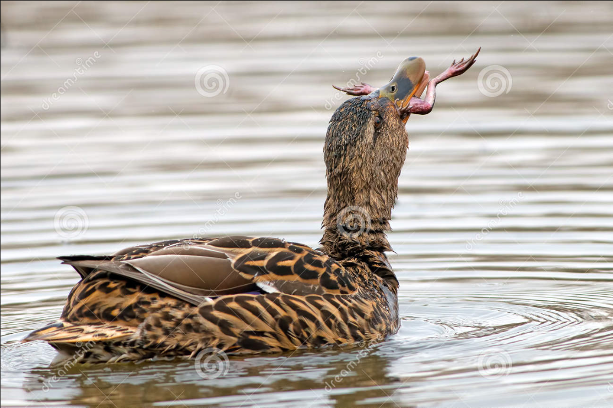

Praticamente onnivora, si ciba di tutto ciò che riesce a trovare immergendo il becco sott'acqua o razzolando sul terreno. In cattività non presenta particolari esigenze alimentari. Grazie alla sua docilità e adattabilità è diventata il prototipo dell'anatra domestica. Poco chiassosa: il suono del maschio è più debole di quello della femmina. Le coppie si formano nel tardo autunno e si riproducono nella primavera successiva. Le femmine depongono da 9 a 15 uova di colore tendente al verde in nidi nascosti in anfratti del terreno e al coperto, tra rocce o cespugli. Le femmine sono dotate di spiccato senso materno. La carne di Germano reale è di gran lunga meno grassa di quella dell'anatra comune: ha un sapore particolare e si avvicina al gusto della selvaggina: Il busto di questa anatra è piuttosto rotondo e ben fornito di carne con cospicui filetti.
